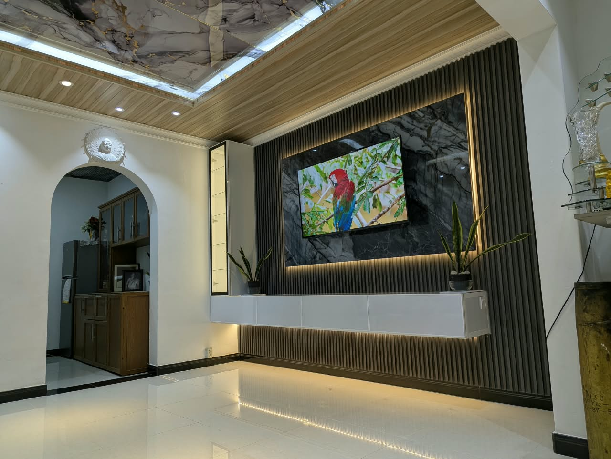

Made for your space
Discuss dimensions, finishes and practical details for your home.
CRAFTED IN SRI LANKA. MADE FOR YOU.
Bring your space to life with custom aluminium fabrication and interior finishes, made with responsibility and care.
From your first idea to the finishing touch.
Serving you, island-wide.

A place for everything.
A finish that feels like home.
01 / THE WAY WE WORK
A kitchen that works for you. A living room that brings everyone together. At M. N. Aluminium Fabricators, we help turn the spaces you use every day into spaces you love.
From pantry cupboards to a complete feature wall, we provide high-quality, reliable aluminium fabrication services across Sri Lanka, with responsibility and care.
View our company brochure ↗Discuss dimensions, finishes and practical details for your home.
Thoughtful fabrication for a clean, coordinated finish.
Get in touch about your project, wherever you call home.
02 / WHAT WE DO
Practical solutions, considered finishes.
Explore what we can create for your home.
Bring order and character to your kitchen with custom aluminium pantry cupboards. Explore storage layouts and finishes that work with your everyday routine.
Plan your pantry ↗Frame your view with aluminium doors and windows. Tell us about your openings, preferred style and space so we can discuss a suitable solution.
Discuss your space ↗Create a focal point with a coordinated TV wall, decorative panels and ceiling finishes. Bring your inspiration and we’ll help you explore the details.
Create your feature wall ↗Give your bathroom a defined shower space and a clean finish. Contact us to discuss your bathroom layout and shower enclosure requirements.
Talk bathroom details ↗03 / A CLOSER LOOK
A look at our work, from useful storage
to the details that bring a room together.

A LITTLE INSPIRATION
Warm textures. Clean lines. A place that feels like you. Share your ideas, photos or sketches and let’s start a conversation.
Bring us your ideas ↗Interior inspiration · not a completed M. N. project04 / LET’S MAKE IT HAPPEN
Share your location, the service you need and a few photos or rough dimensions.
Discuss design, materials, measurements and a quotation with our team.
Agree on the scope and schedule directly with us before work begins.
05 / YOUR NEXT CHAPTER
A new home, a refresh, or an idea you’ve been saving.
We’d love to hear about it.
⌖ Island-wide service · Sri Lanka